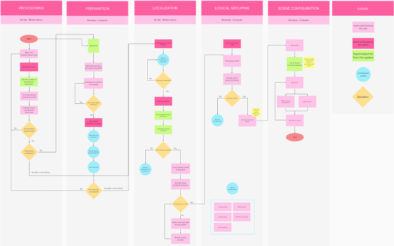
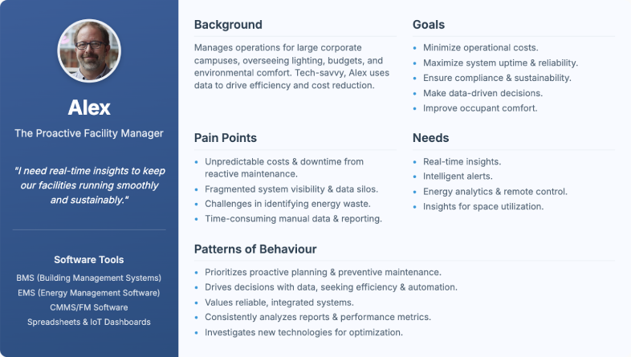
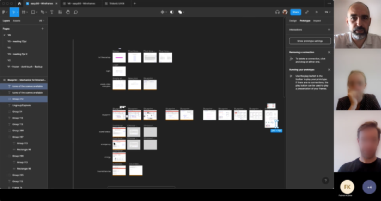
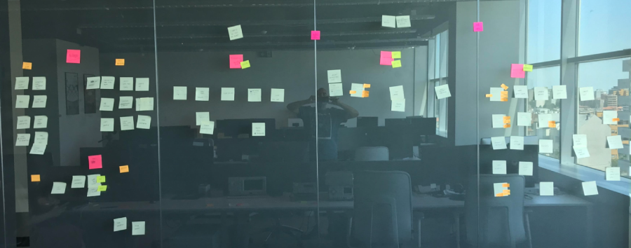
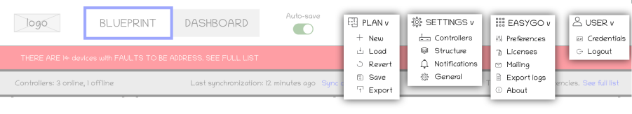

lichtMONITOR (easyGO)
A Vision for Connected Buildings in IoT
A software application that shifts Smart Lighting Management from reactive to proactive, providing insights and streamlining operations for enhanced building efficiency.
Context & Contribution
Tridonic launched a new software initiative in 2022, codename "easyGO" (later becoming lichtMONITOR), aimed at transforming lighting infrastructure into a data-rich backbone for operational efficiency and sustainability. A key initial requirement was a graphical overview (GO) of the installation site to facilitate commissioning, monitoring, and maintenance.
My contribution as UX / Product Designer:
- Bridged the gap between user needs, business goals, and technical feasibility.
- Led UX Research by conducting user interviews, contextual inquiries, and usability testing.
- Defined the product's Information Architecture by structuring complex data.
- Led UI Design by creating wireframes, prototypes, and high-fidelity mockups.
Problem & Opportunity
Our initial understanding revealed reactive lighting management, often involving manual checks or waiting for complete luminaire failure, as a significant pain point for facility managers. This reactive approach underscored the urgent need for a more intelligent system, as it typically resulted in:
- Operational Costs: Stemming from emergency repairs, inefficient technician dispatch, and increased downtime.
- Lack of Centralized Visibility: Over lighting system health and performance.
- Limited Data: Preventing data-driven decisions for optimization or proactive planning.
Opportunity Landscape: Leveraging Smart Building Trends
There was a clear opportunity to leverage IoT and smart building technologies to help facility managers reduce energy consumption and streamline configuration and maintenance, by developing a solution that would offer proactive insights and simplify complex operations for large-scale deployments, like installation configuration laid out in the following flowchart.

Discovery & Key Insights
User Research: Uncovering Pain Points & Workflows
To deeply understand our users, we engaged in various UX research activities including user interviews and contextual inquiries. This helped us understand their daily tasks, current challenges with lighting management, desired functionalities, and how existing systems were often fragmented and inefficient.

Key Insights: The Data-Driven Advantage
- Actionable Data is Key: Users needed interpreted data and clear, prescriptive recommendations, not just raw luminaire data.
- Centralized Control is Paramount: A single, intuitive platform was essential for managing distributed lighting efficiently and reducing complexity.
- Proactivity Reduces Cost: Predictive maintenance, anticipating failures, proved more valuable and cost-effective than reactive approaches.
Vision & Strategy
The long-term vision for lichtMONITOR was to evolve into a foundational IoT backbone for smart buildings, extending its capabilities far beyond lighting. This included expanded sensor integration, deeper BMS integration, AI-driven automation for autonomous system adjustments, and inherent scalability designed to handle increasing numbers of connected devices and larger building portfolios.
Challenges & Risks: Navigating Complexity
- Data Volume & Variety: Handling vast amounts of real-time data from thousands of luminaires and sensors efficiently.
- Integration Complexity: Ensuring seamless interoperability with diverse existing BMS and hardware from various manufacturers.
- Accuracy of Predictions: Building reliable AI/ML models for predictive maintenance with minimal false positives.
- Cybersecurity: Protecting sensitive building operational data and ensuring system integrity against threats.
Core Assumptions: Foundations for Design
- Facility managers value uptime and cost savings above all else, making these primary drivers for product adoption.
- Visual dashboards are highly preferred over raw data tables for quick comprehension and decision-making.
- Automated alerts for critical issues are essential for proactive maintenance and minimizing downtime.
- Remote access and control capabilities are non-negotiable for flexible and efficient operations.
Delivery & Execution
Transparent communication and cross-functional team alignment were fundamental to our highly collaborative Agile environment, enabling effective workflow and business objectives. The following image captures a pivotal stakeholder alignment meeting, illustrating how we collaboratively shaped the product's direction.

Technical Architecture: Edge-to-Cloud Intelligence
The lichtMONITOR system leveraged a robust edge-to-cloud architecture for scalability, reliability, and security. The lichtMONITOR server X5 collected real-time data from DALI-2 drivers and sensors at the edge, securely transmitting it to a cloud platform for advanced analytics, remote control, and user access. This hybrid approach ensured local responsiveness while leveraging cloud capabilities for comprehensive insights and management.
UX/UI Design Process: Iterative & User-Centric
My design process was highly iterative and user-centric, directly informed by discovery research and continuous feedback. A foundational step in this process encompassed defining the information architecture, creating a logical roadmap for how users would navigate the system. The following images illustrate this crucial design phase, showcasing the sitemap that guided the creation of low-fidelity wireframes and interactive prototypes for usability testing.


Achievements & Impact
Key Takeaways
Holistic Approach
Combining user experience design with technical implementation and business strategy creates products that not only meet user needs but also drive business success.
Scalability is Key
Designing for scalability from the outset ensures that the product can grow and adapt to future needs without requiring a complete overhaul.
Security is Non-Negotiable
In an increasingly connected world, ensuring robust security measures is essential to protect sensitive data and maintain user trust.
Data Visualization is Key
For complex systems and vast datasets, presenting information in an intuitive, actionable visual format is crucial for user adoption and efficient decision-making.
Collaboration Fuels Success
Close partnership and seamless communication with Product Owners and engineers are vital to ensure that design decisions are technically feasible and align precisely with overarching business objectives.
Iterative Design is Essential
Continuous user feedback and iterative design processes are crucial for refining features and ensuring the product evolves to meet user needs effectively.
Get in touch if you want a deeper dive or to discuss how my skills and expertise can
help on your challenges.
More about me on LinkedIn. Let's connect!